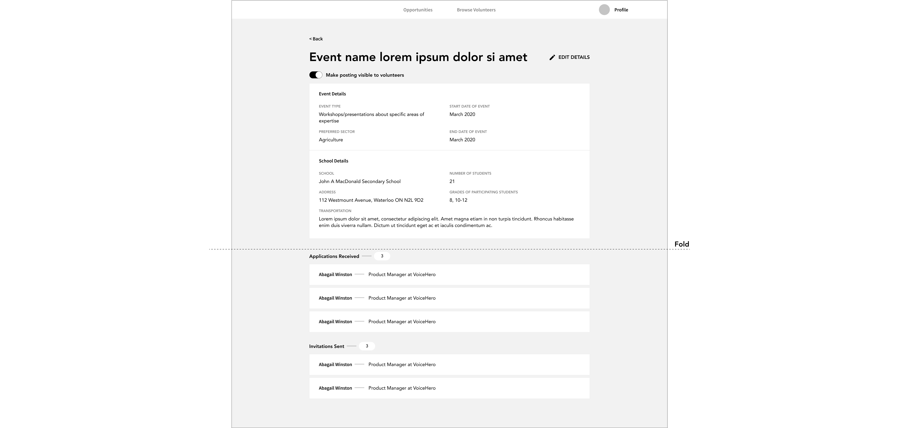
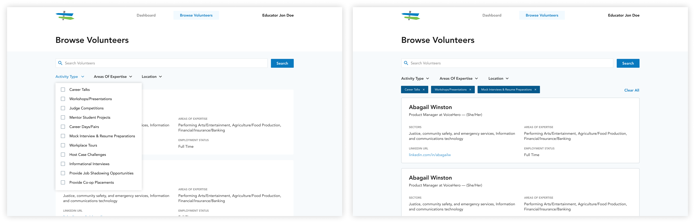
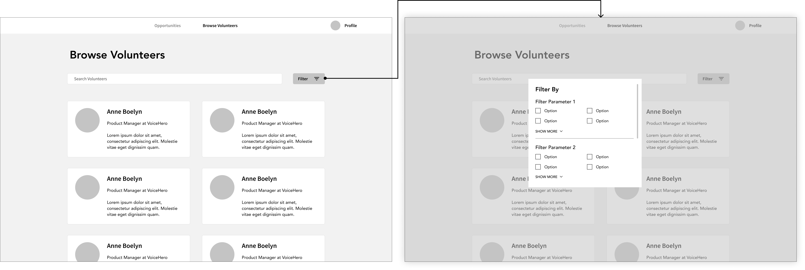

Business Education Partnership
Role: Product Designer
Timeline: 8 months
Team: 2 Designers (myself &
Grace Ma) + a team of Developers
Context
Business Education Partnership (BEP) is a non-profit organization that provides students’ with career exploration opportunities. One of their primary initiatives is connecting teachers with industry professionals and bringing them into their classrooms to host workshops and presentations. UW Blueprint partnered with BEP to improve their current process of matching volunteer industry professionals with educators.
The Problem
Previously, the web app portal they were using was outdated and the majority of the work was being done manually by BEP’s program coordinator. Educators would submit event opportunities via the portal and BEP would review each one and reach out individually to volunteer speakers. Even the process of adding educators and industry professionals to BEP’s database was done manually.
This process is not scalable nor efficient. As BEP continues to grow, more requests for volunteers come in.
The Solution
Our team developed a web app where educators can connect with industry professionals who want to support youth career development and industry professionals can find opportunities to educate youth about their field of work.
Arriving at the Solution
User Research Findings
We conducted six user interviews (three educators and three volunteers) with BEP’s existing users to learn more about their frustrations with the current portal. From our findings, we created a persona for each type of user.
Key findings:
- Both educators and volunteers prefer to use emails as their primary method of communication and they check their emails frequently
- While educators often check their emails on mobile while on the go, they generally access the BEP portal on desktop
- Educators will only access the portal if there is an event coming up. They typically host 1-2 events once every few months
- Volunteers don’t go on the BEP portal often as there aren’t many actions for them to take other than keeping their profiles up to date
Given the users’ preference for email communication, we worked them into the user flow so that users don’t miss important information (ie. invitations to events, event changes, etc.) as they are not in the habit of logging onto the BEP portal often. We wanted to ensure that the new portal fit seamlessly into their existing habits and behaviours. We worked closely with the developers to smooth out the transitions between email and the portal by using tokenized links.
Left: Educator flow. Right: Volunteer flow.
Requirements
From our user research findings and business considerations from BEP, we identified a list of features that are needed to help users accomplish their tasks.
- A way for educators and volunteers to sign up for the BEP platform
- A way for educators to post and share event opportunities
- A way for volunteers to browse upcoming opportunities and apply to be a facilitator
- A way for educators to browse volunteers and invite them to events
- A way for educators and volunteers to keep track of their upcoming and past event(s)
Feature Breakdown & Decisions
Sign-Up
Before new educators or volunteers can access the portal, they need to submit an application to BEP first.
Design Decision: Progressive Disclosure
BEP has a large database of partner companies and organizations in which volunteer industry professionals are a part of. In their application, volunteers need to state who their employer is. If a volunteer’s employer is not listed, they will need to provide additional details (ie. organization’s sector, contact information, etc.) so that BEP can add them to their database.
To not overwhelm the user with too many actions, the additional fields are not displayed unless the user indicates that their employer was not listed. The actions to add a new organization is not revealed unless requested. Furthermore, to save the user from having to scroll through the list to find their employer, they are able to type their employer name. Only then if no employers by that name exists in the database does the option to add a new employer appear.
Dashed lines link the fields together to reduce cognitive load by grouping related information together.
Past Iterations
In the first iteration of the sign-up form for volunteers, users whose employers weren’t in the database would submit their employer’s information in a modal. The problem is that once the user has finished filling out the fields in the modal and saved their answers, it isn’t displayed on the main form, making it unclear to the user whether or not their answers were saved and submitted. This also makes it tricky for the user to edit their answers and review the overall form before submission.
Additionally, when users of a new employer first search for their employer from the dropdown (and no result is found), seeing “employer not found” denotes negative feelings and may discourage them from adding it since the field is optional or confuse users on how to proceed with the lack of guidance and actionable items.
The users feel as though they’ve hit a dead end whereas with progressive disclosure, the process flows smoothly into adding a new employer’s information as there are clear actions forward. Furthermore, no fields are hidden away in a modal, keeping the user aware and informed on all their answers.

Left: Progress disclosure trigger. Right: New fields, progressively disclosed.
Design Decision: Multi-Step Form + Stepper
A lot of information is required of the volunteer so the application form is quite long. To make the process less daunting, the form was broken up into sections with a stepper to inform the user where they are in the process and how much is left to complete.
Dashboard & Event Details
Educators and volunteers both have a dashboard displaying their upcoming events. They can also view past events and access specific event details. From an event details page, users can view and take related actions such as applications and invitations.
Left: Educator dashboard. Right: Event details, event applicants.
Past Iterations
Early educator dashboard explorations placed applications and invitations on the main page. However, in the case of where educators have two or more upcoming events, it will be difficult to distinguish clearly which event volunteers applied for or were invited to.
Iteration 1
In the next iteration, we decided to move the applications and invitations sections to the event details page to clearly distinguish the participants for each event, placing them beneath the details. However, all event related information (details, applications, invitations) are equally important to educators and not one or the other should be hidden beneath the fold. There’s also a chance that educators will miss incoming applications if they don’t scroll down.
Iteration 2
The final design displays all information at a glance. We moved applications and invitations into their own separate tabs with the amount of applications received and invitations sent shown. That way, users can get high-level information regarding applications and invitations without having to scroll, effectively reducing the chance of them missing out on important information.
Final designs
Design Decision: Actionable Empty States
Considering that browsing opportunities is a new feature, a volunteer dashboard’s empty state was an opportunity to introduce the feature and encourage users to engage with the platform. The same goes for introducing the invitation functionality for educators; the empty state informs them on how to fill it with content, by inviting volunteers to their event.
Left: Volunteer dashboard empty state. Right: Educator event applications empty state.
The text introduces users to the new features and placing a CTA in the empty screen guides users’ interactions, increasing engagement. The empty state was an opportunity to inform users of all the changes to the portal.
Design Decision: Informative Cards
To help educators accomplish their task of filling volunteer spots for an event, we surface that information for each event on the preview card. We show for each event how many spots have already been filled, how many applications were received, and how many invitations were sent. The user can get all this information right from their dashboard without clicking into the event details.
Browsing
This feature replaces the manual matching of events with volunteers traditionally done by BEP. For educators, they are able to browse and invite volunteers to their events. As for volunteers, they can browse upcoming events and let educators know that they’re interested in participating.
Left: Educator browse volunteers. Right: Volunteer browse opportunities.
Design Decision: Filter
To help educators find relevant industry professionals and to help volunteers find events of interest, filters are there to guide their search. All possible filter parameters are displayed upfront, informing the user right away how they can structure their view. Selected filter chips are displayed to remind the user that their view has been altered.
Past Iteration
In earlier explorations, filter options open up in a modal. This allowed for more of the screen real estate to be dedicated to showing the user content. However, users may not be aware of all the possible filter parameters or forget that they have filters selected and be frustrated by why their view is altered.
Early explorations
The card layout was also revised for a few reasons. The photo was removed as most volunteers indicated that they wouldn’t upload a photo. Removing the photo also creates consistency between volunteer cards and event cards.
We also learned from the users what information should be displayed on the card that would be the most useful to them. Knowing how much information needed to be presented, a two column layout would decrease readability so we opted for a single column layout for scannability.
Final browse & filter design.
Design Decision: Infinite Scroll
Between infinite scroll and pagination, we opted for infinite scroll to increase user engagement. Since BEP is no longer doing the work of finding speakers for an event, we wanted to encourage educators and volunteers to find new connections and opportunities themselves. With new events being created and more volunteers joining BEP, infinite scroll facilitates a smoother browsing and discovering behaviour.
Design Decision: Disappearing Header
To create more space for browsing, the header is hidden once the user starts scrolling down. This allows for one more full volunteer card to be shown, increasing the amount of content being shown on screen to fully immerse the user. The header comes back once the user starts scrolling back up or if they move their cursor to the navigation bar so that search and filter is still easily accessible as they help the user focus their browsing experience.
Takeaways
Development Considerations
Getting to work so closely with a team of developers and working to actually build the portal pushed me to really think about all the little details such as various states, interactions, and edge cases. Not only did those details need to be considered, I also had to communicate them to the developers. Design systems and prototypes were a huge asset in that.
Work closely with Product Managers (PMs) and Clients.
Another thing that I learned is that scoping a project isn’t a job just for PMs; designers should participate as well. Better and more frequent communication with PMs and clients could have caught a lot of oversight and resulted in less wasted work. The project was re-scoped a few months in and had designers been a part of the conversation right from the get go, expectations would have been better managed and a lot of time could have been saved.
User Research
The last takeaway from this project is that nothing beats talking to the users. The NPO was our main point of contact and provided all the answers to our questions (in a pinch) but getting access to real users is invaluable.
Next Steps
Although this project has shipped and been handed off to the NPO, there were a few things that I would have like to have done with more time and resources:
- Add more fun and moments of delight to the UI. We focused on a simple and clean UI based on our user demographic but it wouldn’t hurt to add a little more visual interest into it.
- Finesse the copy. Copy writing tends to be overlooked but it’s the little detail that can really make a difference in UX.
- Usability testing and design validation. Find out if our designs align with users’ current behaviour and habits; if it helps them accomplish their tasks.